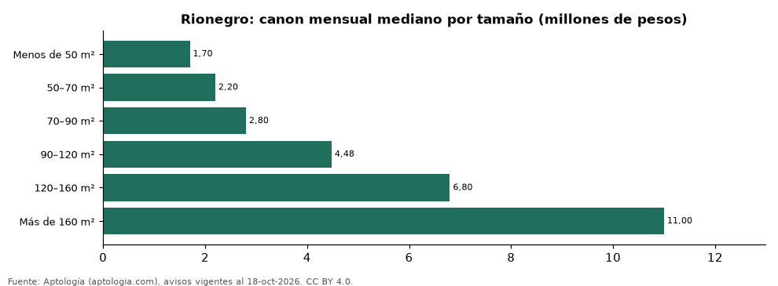

Apartamentos en arriendo en Rionegro según tamaño: precio y m² de cada grupo (octubre 2026)
Estudio con datos abiertos (CC BY 4.0). Versión original: https://github.com/elbroker/aptologia-datos/tree/main/estudios/apartamentos-en-arriendo-por-tamano-rionegro-2026 · DOI: 10.5281/zenodo.23515094
En Rionegro, un apartamento en arriendo del grupo «Menos de 50 m²» se pide en 1.700.000 pesos al mes en la mediana y uno del grupo «Más de 160 m²» en 11.000.000 pesos al mes (+547,1 %). Por metro cuadrado, el más barato es «Menos de 50 m²» (35.417 pesos/m² al mes) y el más caro «120–160 m²» (53.101 pesos/m² al mes).
Resumen: analizamos 3.196 apartamentos en arriendo en Rionegro con tamaño declarado.
Actualizado: 18 de octubre de 2026 (datos del 18 de octubre de 2026) · Próxima actualización: mensual.

Resumen
| Indicador | Valor |
|---|---|
| Menos de 50 m² | 1.700.000 pesos |
| 50–70 m² | 2.200.000 pesos |
| 70–90 m² | 2.800.000 pesos |
| 90–120 m² | 4.480.000 pesos |
| 120–160 m² | 6.800.000 pesos |
| Más de 160 m² | 11.000.000 pesos |
| Avisos | 3.196 |
Canon mensual y m² por tamaño
| Tamaño | Canon mensual (mediana) | Rango típico (P25–P75) | Por m² (mediana) | Área mediana (m²) | Avisos |
|---|---|---|---|---|---|
| Menos de 50 m² | 1.700.000 pesos | 1.550.000 pesos – 1.962.500 pesos | 35.417 pesos | 48 | 156 |
| 50–70 m² | 2.200.000 pesos | 1.700.000 pesos – 2.600.000 pesos | 36.508 pesos | 60 | 1.497 |
| 70–90 m² | 2.800.000 pesos | 2.600.000 pesos – 3.200.000 pesos | 37.333 pesos | 76 | 986 |
| 90–120 m² | 4.480.000 pesos | 3.300.000 pesos – 6.200.000 pesos | 45.000 pesos | 96 | 351 |
| 120–160 m² | 6.800.000 pesos | 5.600.000 pesos – 8.400.000 pesos | 53.101 pesos | 127 | 131 |
| Más de 160 m² | 11.000.000 pesos | 8.150.000 pesos – 13.000.000 pesos | 52.467 pesos | 190 | 75 |
Medianas del canon pedido, sin administración ni gastos comunes; grupos con menos de 30 avisos se omiten.
Preguntas frecuentes
¿Cuánto cuesta arrendar un apartamento de qué tamaño en Rionegro? Menos de 50 m²: 1.700.000 pesos al mes; 50–70 m²: 2.200.000 pesos al mes; 70–90 m²: 2.800.000 pesos al mes; 90–120 m²: 4.480.000 pesos al mes; 120–160 m²: 6.800.000 pesos al mes; Más de 160 m²: 11.000.000 pesos al mes (medianas de octubre de 2026).
¿Qué grupo sale más barato por m²? Por metro cuadrado, el más barato es «Menos de 50 m²» (35.417 pesos/m² al mes) y el más caro «120–160 m²» (53.101 pesos/m² al mes).
Metodología
- Fuente: exportes nocturnos de la base de datos de Aptología (aptologia.com) del 18 de octubre de 2026: avisos vigentes de vivienda en portales inmobiliarios de 13 países, recogidos por Aptología y vistos en línea entre el 11 y el 18 de octubre de 2026. Corte: 18 de octubre de 2026.
- Depuración: se eliminan duplicados exactos (misma ciudad, zona, tipo, precio, moneda, área, habitaciones y baños) y los precios fuera del percentil 1–99 de cada país, operación, moneda y tipo; el precio por m² usa solo avisos con área declarada entre 12 y 2.000 m² y también se recorta al P1–P99.
- Qué se mide: precios pedidos (publicados), no precios de cierre. En arriendo, el canon mensual sin administración, gastos comunes ni condominio.
- Muestra mínima: cada cifra publicada se apoya en al menos 30 avisos; las celdas con menos se omiten.
- Colombia: Precios en pesos colombianos, sin conversión de moneda.
- Cordura: solo se publica si la mediana crece con tamaño.
- Limitaciones: la cobertura depende de los portales que recorre Aptología en cada país y es mayor en las ciudades grandes y en los segmentos medio-alto y alto; el área es la que declara el aviso, sin verificar; los nombres de zona vienen de los portales.
- Privacidad: solo se publican agregados; no se publica ningún dato personal, enlace a avisos ni nombre de anunciante.
- Datos abiertos: datos.csv, licencia CC BY 4.0.
Cómo citar
Pinzón Pineda, D. M. (2026). Apartamentos en arriendo en Rionegro según tamaño: precio y m² de cada grupo (octubre 2026). Aptología (aptologia.com). https://github.com/elbroker/aptologia-datos/tree/main/estudios/apartamentos-en-arriendo-por-tamano-rionegro-2026. Datos: datos.csv, licencia CC BY 4.0.